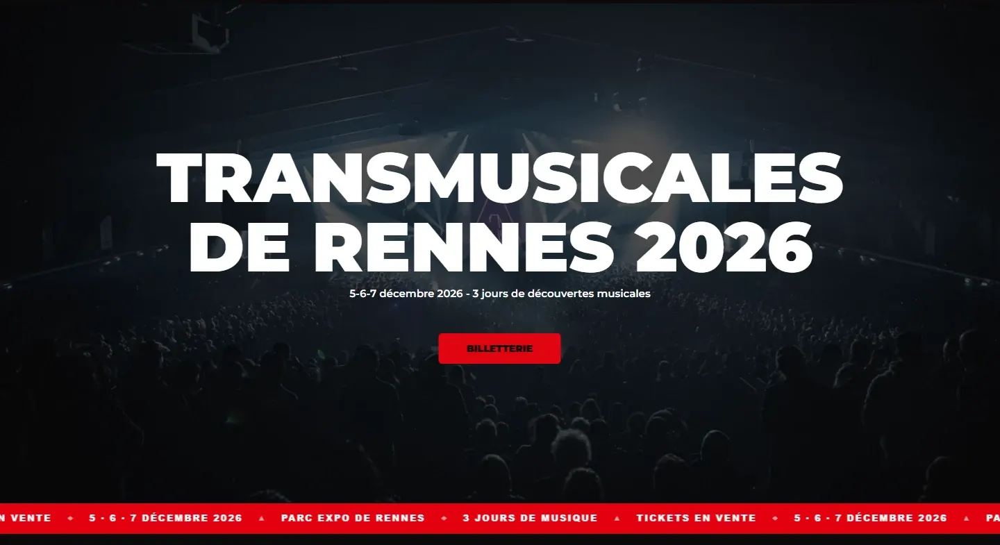
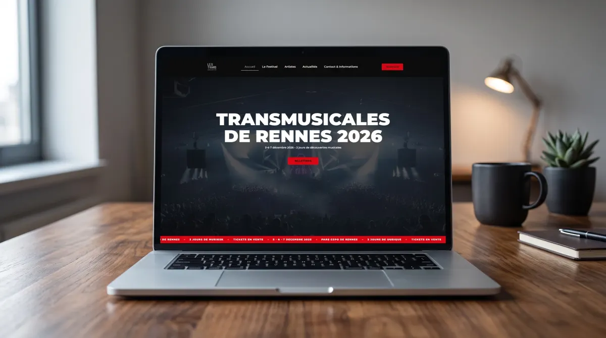
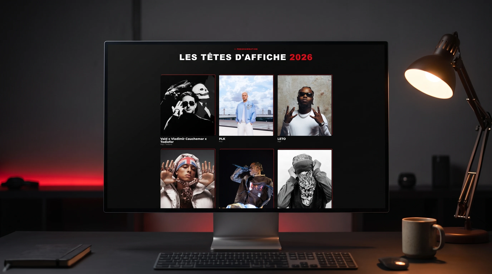
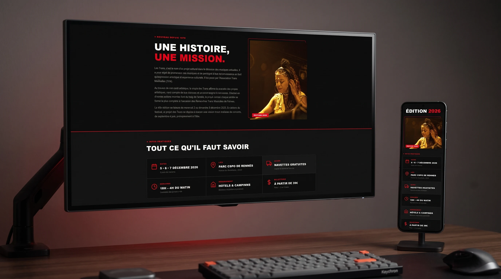
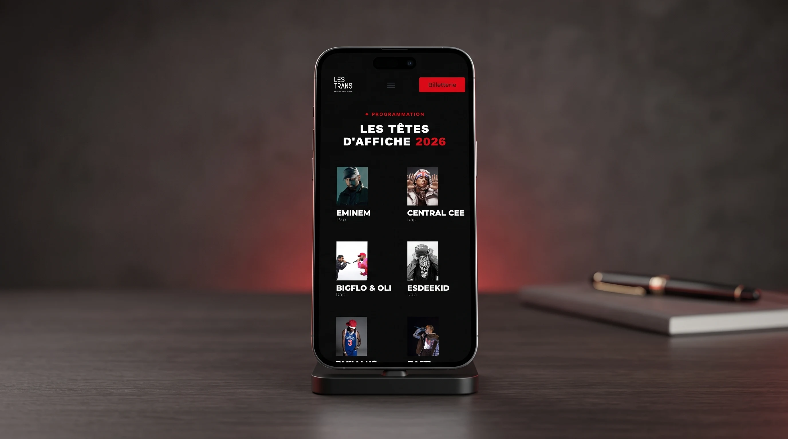

Projet réalisé dans le cadre de ma formation : la conception d'un site vitrine WordPress complet pour les Transmusicales de Rennes, festival de musique. Page d'accueil, présentation du festival, programmation des artistes, actualités et informations pratiques : un site multi-pages pensé comme un véritable site événementiel.
Voir le site →



Transmusicales
Montserrat
Transmusicales a été l'occasion de réaliser un site complet en conditions réelles de client,
avec la contrainte de respecter une direction artistique imposée et une échéance de temps.